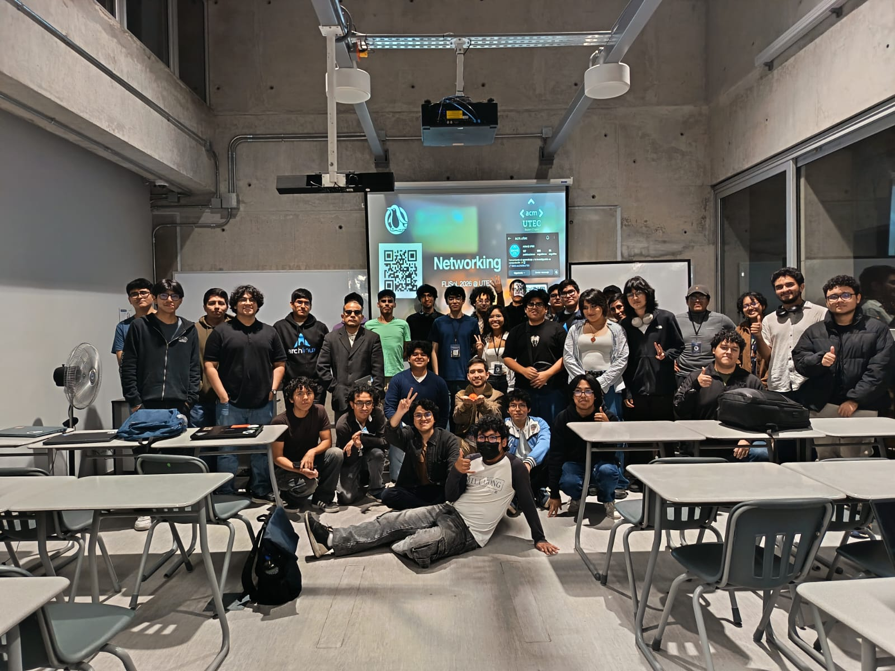

Estudiante de Ingeniería de Sistemas en la UPC (6to ciclo), enfocado en desarrollo Frontend e Interacción Humano-Computadora. Construyo interfaces centradas en el usuario y utilizo herramientas de IA para crear experiencias digitales de impacto.
Soy estudiante de Ingeniería de Sistemas en la UPC con un fuerte enfoque en el desarrollo Frontend y el diseño UX/UI. Mi pasión por la Interacción Humano-Computadora me impulsa a diseñar interfaces que no solo son funcionales sino genuinamente intuitivas.
Utilizo herramientas de IA como Gemini para potenciar mi flujo de trabajo en la creación de presentaciones y recursos gráficos. Estoy aprendiendo continuamente nuevas tecnologías como React y Rust, y disfruto contribuir a comunidades open-source como FLISOL.
Fuera de la tecnología, soy parte de los Scouts del Perú, donde desarrollo habilidades de liderazgo y servicio comunitario. También disfruto del ciclismo, la natación y constantemente retarme a superar mis límites personales.
